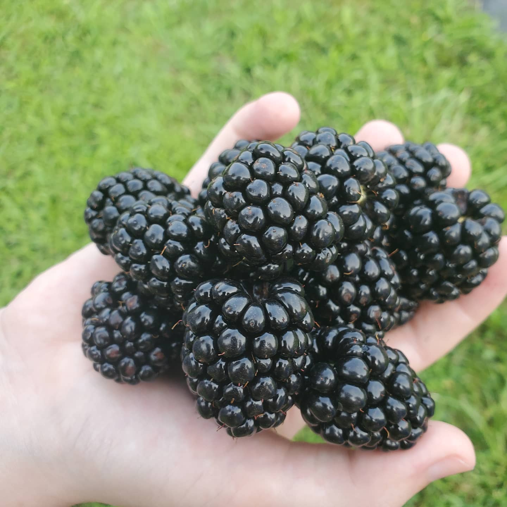
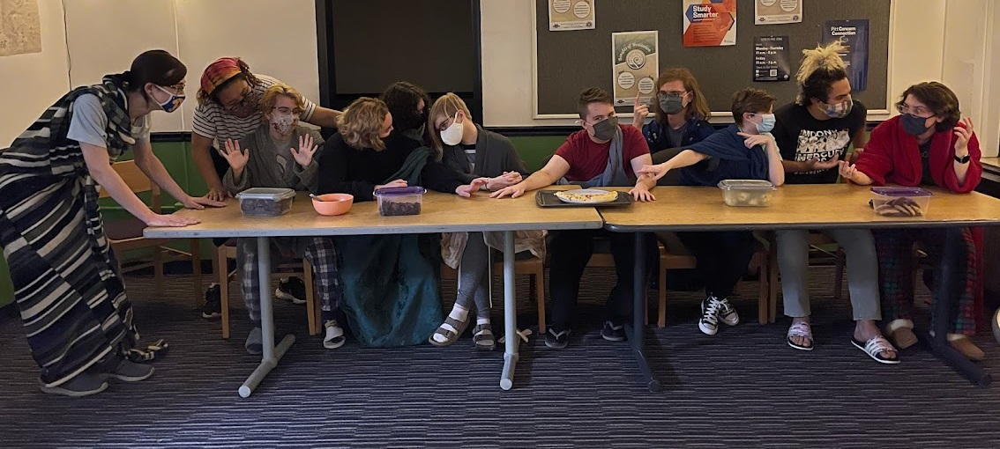

I am in Pitt's School of Computing and Information to earn a degree in Information Science. I enjoy programming, but IS offers more classes focused on human-centered design, and I prefer a field with more focus on the human component of human-computer interaction. I was originally between the Digitigal Narrative and Interaction Design (DNID), Computer Science, and Information Science majors. IS, for me, strikes the perfect balance between the humanities presented in a DNID major and the systems concepts presented in a CS major.
My primary occupation is at my family’s U-Pick blackberry farm. I run the register, assist customers, and maintain the field from the start of July to the middle of August. Apart from that, I’ve worked at an accounting office, and I was a poll worker during the 2020 presidential election.
We currently live in Ohio, where my Dad grew up, but my family and I have also lived in South Carolina, and two different cities in California. Our main family bonding activity is watching Jeopardy together. We have a dog named Hutch, the brown dog seen below. The black dog, Duke Turner, passed away last week. We love them both lots.
I live in Lothrop’s Gender and Sexuality LLC. This is how I’ve met all my friends at Pitt. It’s an extremely tight-knit community, and we have a lot of fun together.
I like to knit, play puzzle games, and read science fiction books. My favorite movie is Pacific Rim, and my favorite book is Gideon the Ninth. I also watch a lot of streams on Twitch when I’m doing homework.